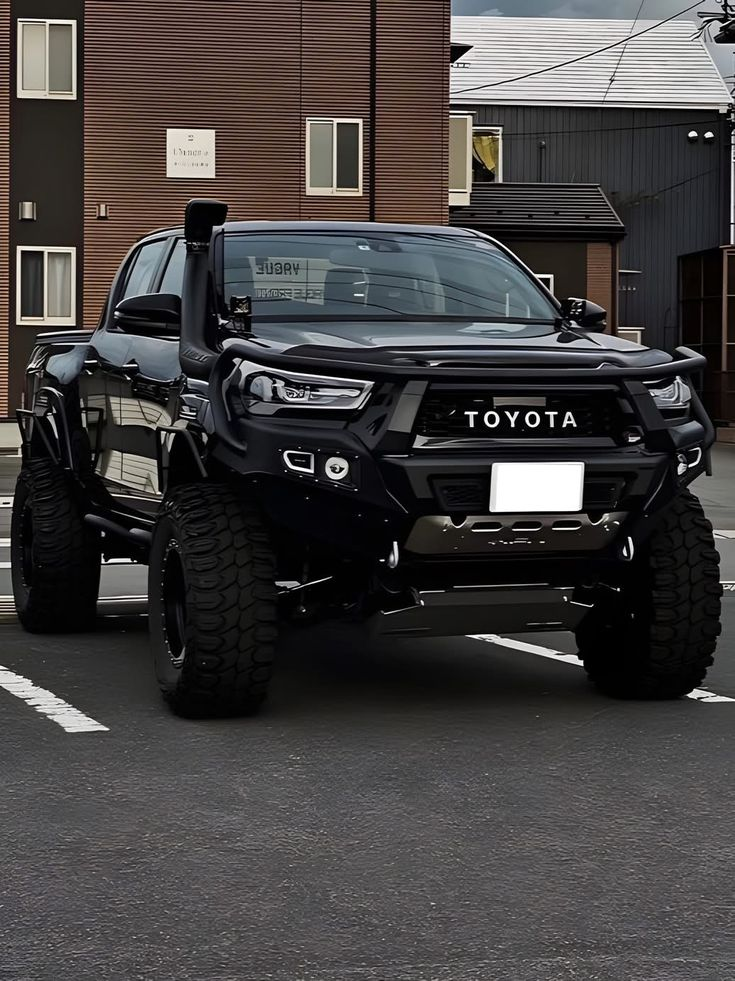

My name is Amarachi, I'm the first daughter but not the first child, i have a sister and two brothers. I'm 20+ and i still don't know what i want to do with my life at this point it feels like i'm just moving in circles.
I have pray, i talk to GOD about everything and sometimes it feels like he's here with me but then when i go back on my word, it feels like i have to start again and i keep messing things up, over and over again at this point I feel he's tired of me.
But that aside, I'm tired, I'm tired of life itself, I start things and i never finish anyone of them, i mean I never finish out of laziness, lack of discipline, inconsistency just name it
Just name it and guess what I'M YET TO FINISH but what can i say, its one of my perks i guess. But right now i have a few things that i have promised myself that i must complete because my feature depends on it
All this must be completed by me Amarachi Happiness Ojini I also need money to buy this car
